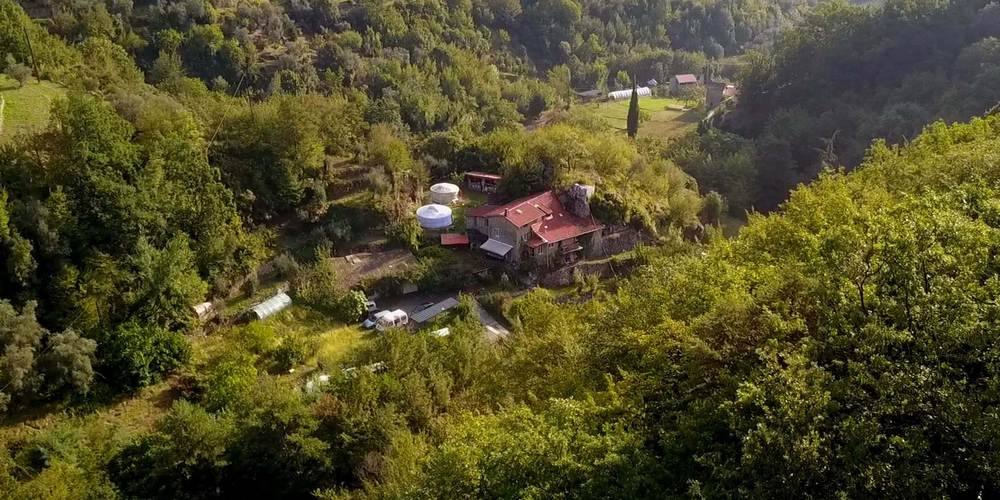
Vacances sportives › Été › Séjour famille
Séjour canyoning famille : multi-activités dans les Alpes-Maritimes
Stage de canyoning entre le Parc national du Mercantour et la mer.
- 7 jours, 6 nuits
- Niveau facile
- Enfants à partir de 8 ans
- Breil-sur-Roya, Haut Pays mentonnais
En résumé
- Sports
- Canyoning, accrobranche, randonnée
- Durée
- 7 jours, 6 nuits, du dimanche 16 h au samedi 10 h 30
- Niveau
- Facile : accessible à tous publics sachant nager
- Destination
- Alpes-Maritimes, Haut Pays mentonnais, Mercantour
- Enfants
- À partir de 7 / 8 ans
- Hébergement
- Gîte ou yourtes, pension complète
- Groupes
- 8 personnes par guide, départ assuré dès 2 personnes
- Encadrement
- Un guide pour chaque activité, matériel fourni
En quelques mots
Vous prenez 3 journées de canyoning dans un des spots les plus importants d'Europe, avec des canyons praticables dès le printemps ! Vous allez aimer, que vous soyez débutant ou expert ! Vous y ajoutez une randonnée dans le Parc national du Mercantour et un accrobranche original au-dessus de la mer, ce qui donne une formule qui satisfera toute la famille.
Les points forts
- Trois canyons différents, du canyon d'initiation aux toboggans de 13 m, sans obligation de sauter
- Une journée dans la Vallée des Merveilles, au cœur du Parc national du Mercantour
- Un accrobranche avec vue sur la Méditerranée
- Gîte ou yourtes, à 2,5 km de la gare de Breil-sur-Roya, en pension complète
Votre programme de vacances canyoning en famille dans le Mercantour
Jour 1Arrivée à Breil-sur-RoyaDimanche
Arrivée à Breil-sur-Roya à partir de 16 h, rendez-vous devant la gare SNCF : nous vous conduirons au gîte à 2,5 km, votre véhicule sera garé sur notre parking.
Coordonnées GPS de la gare de Breil-sur-Roya : latitude 43.936617, longitude 7.51479. Pour nous rejoindre, prenez l'autoroute Paris – Nice – Vintimille (Italie), quittez-la à cette dernière sortie et suivez la vallée de la Roya sur 22 km.
Pour les personnes souhaitant arriver en avion ou en train, nous consulter.
Jour 2Canyon AudinLundi
- 3 h 30 dans le canyon
- Marche d'approche 40 min, 120 m de dénivelé
- Retour 15 min
Petit déjeuner et départ à 9 h, petit trajet de 15 min en voiture pour arriver au départ du canyon, et c'est parti pour 5 jours d'activités. Pour commencer, nous vous proposons le joyau du canyoning d'initiation, avec 20 vasques autorisant des sauts de 1 à plusieurs mètres ainsi que des toboggans. Dans ce canyon, tous les sauts ou toboggans peuvent se contourner sans l'utilisation de corde, pour une descente très ludique durant laquelle on prend son temps pour bien profiter. Dernière chose : un petit rappel sur corde sera proposé à la fin de la descente. Le pique-nique, un moment de détente bien apprécié, se passe autour d'une vasque paradisiaque !
Jour 3Accrobranche, randonnée et baignadesMardi
- Randonnée 1 h 30
- Accrobranche 1 h 30, 3 parcours
Départ à 9 h en voiture (15 min) pour rejoindre le village de Fanghetto. Randonnée de 1 h 30 en suivant les méandres de la Roya jusqu'au village d'Airole. Baignade et pique-nique. L'après-midi, nous vous conduisons en 10 min sur les hauteurs du village, avec une vue sur la Méditerranée unique ! Accrobranche avec 3 parcours, de vert à rouge.
Jour 4Canyon AiroleMercredi
- 3 h 30 dans le canyon
- Marche d'approche 45 min
- Sauts jusqu'à 5 m, toboggan de 8 m
Canyoning 2, le retour ! Petit déjeuner et départ à 9 h pour rejoindre l'Italie toute proche en à peine 20 min. La descente s'effectue en plein soleil, avec une température de l'eau qui dépasse souvent les 20° dans ce canyon sauvage et très peu fréquenté. Vasques d'un vert émeraude, initiation aux rappels sur corde, sauts de 5 m maximum et toboggans, dont un de 8 m. La vidéo ci-dessous reflète bien l'ambiance générale.
Jour 5Randonnée dans le Parc national du MercantourJeudi
- 5 h de marche
- 600 m de dénivelé
- Castérino, 1 500 m d'altitude
Petit déjeuner et départ à 9 h, avec un trajet en voiture de 35 min pour rejoindre Castérino, à 1 500 m d'altitude. Découverte de la vallée de Fontanalba, dans la zone de la Vallée des Merveilles du Parc national du Mercantour : observation de chamois, bouquetins et marmottes, commentaires sur les gravures protohistoriques de l'âge du bronze. Pique-nique autour du lac Vert de Fontanalba. Le rythme est adapté à tous les niveaux ; de nombreux arrêts avec des commentaires rendent cette balade très agréable.
Jour 6Canyon CarlevaVendredi
- 3 h 30 dans le canyon
- Marche d'approche 30 min
- Retour 15 min
Petit déjeuner et départ à 9 h pour rejoindre en 10 min le départ du canyon de Carleva, à côté du village de Breil-sur-Roya. Les amateurs de toboggans seront ravis, avec un festival de glissades dont 2 de 13 m ; ces toboggans ne sont pas obligatoires et peuvent se négocier en rappel. De nombreux sauts également au programme. Un canyon généralement peu fréquenté. Pique-nique au milieu de la descente, avec le choix du soleil ou de l'ombre.
Jour 7Petit déjeuner et fin du séjour à 10 h 30Samedi
Petit déjeuner, puis fin du séjour à 10 h 30.
Un aperçu du séjour en images
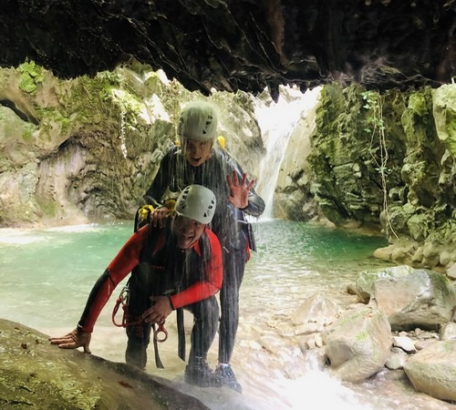
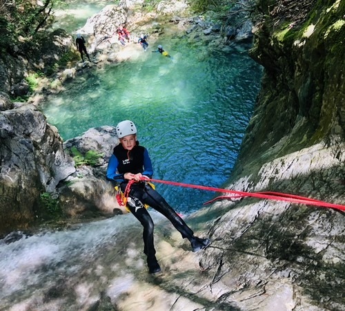
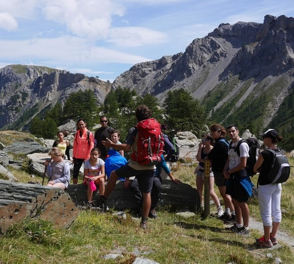
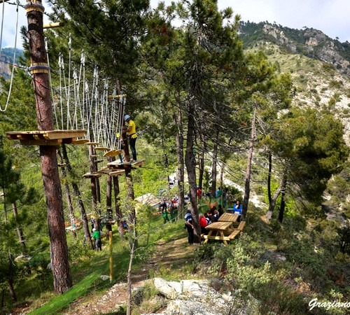
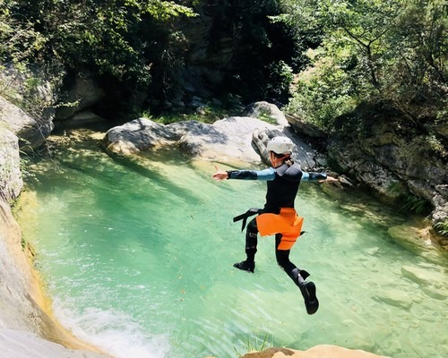
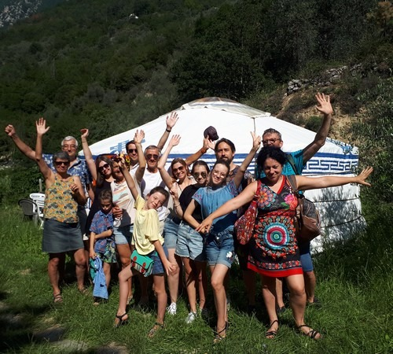
Vos hébergements en gîte ou en yourtes
- 15 places en gîte, réparties en 7 chambres, 3 salles de bain et 3 WC.
- 14 places en yourtes à côté du gîte : une yourte de 6 places avec salle de bain et WC, une yourte de 4 places avec salle de bain et WC, une yourte de 2 places et une cabane dans les arbres de 2 places avec salle de bain et WC.
Nous répartissons au mieux les personnes (familles, amis, couples…) en respectant leur intimité.
Les lits sont équipés de draps, oreillers et couettes ; les affaires de toilette ne sont pas fournies.
Sur place
Le gîte et les yourtes sont à 2,5 km de la gare de Breil-sur-Roya, dans la vallée de la Roya. Nous venons vous chercher à la gare le dimanche, et votre véhicule reste garé sur notre parking pendant le séjour.
Au choix, selon les disponibilités : le gîte, une yourte avec salle de bain, ou la cabane dans les arbres. Dites-nous votre préférence au téléphone.
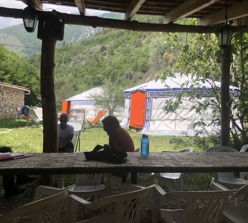
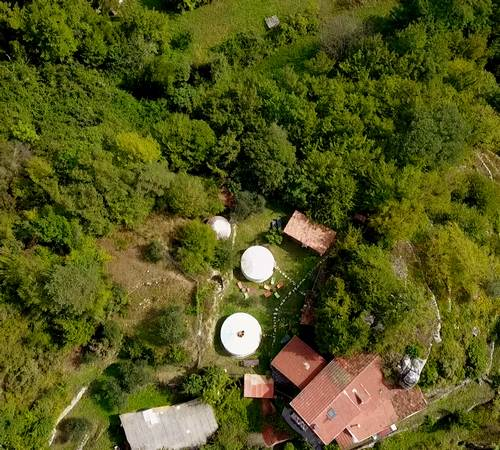
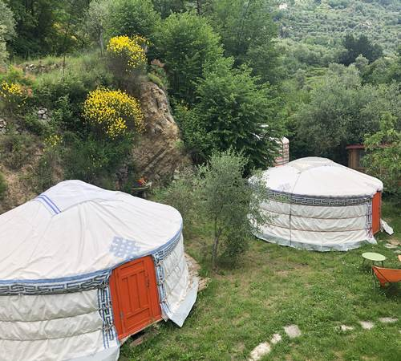
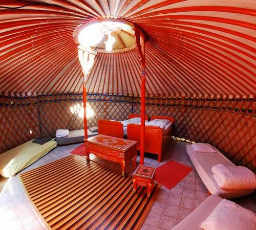
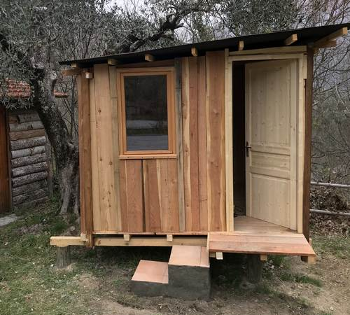
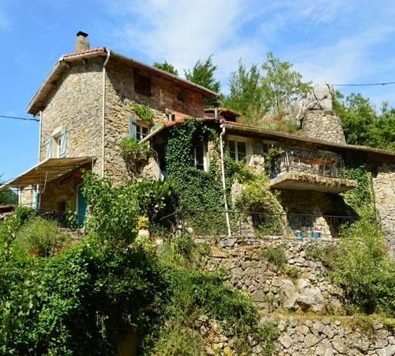
Dates et prix
Il n'y a pas de date butoir pour les inscriptions. Privilégiez un premier contact par téléphone au +33 (0)6 76 28 25 00, 7 j/7 de 8 h à 21 h : vous aurez les disponibilités en temps réel, le choix entre nos yourtes et le gîte, et nos réponses sur la météo, la composition des groupes et l'âge des enfants.
- Printemps 2026
- 4 au 9 maiPlaces disponibles
- Été 2026
- 5 au 11 juilletComplet
- 12 au 18 juilletComplet
- 19 au 25 juilletComplet
- 26 juillet au 1er aoûtComplet
- 2 au 8 aoûtComplet
- 9 au 15 aoûtComplet
- 16 au 22 août2 places disponibles
- 23 au 29 août
4 personnes inscrites · 10 % de remise10 places disponibles
Prix par personne, pension complète
Inscription individuelle
Famille de 2 à 3 personnes
565 € pour un enfant de moins de 12 ans
Famille à partir de 4 personnes
545 € pour un enfant de moins de 12 ans
Le prix comprend
- La pension complète du dimanche soir au samedi matin
- L'encadrement pour les 5 activités
- La location du matériel
- L'assurance responsabilité civile agence de voyage
- Les parures de lit complètes (apportez vos affaires de toilette)
Le prix ne comprend pas
- Le voyage aller-retour jusqu'à Breil-sur-Roya
- Les transferts durant le séjour (nous organisons un covoiturage, lorsque c'est possible, avec les participants et les guides)
- Les affaires de toilette, les boissons, les dépenses personnelles
Informations pratiques
Information utile
Séjour accessible à tous publics sachant nager. Enfants admis à partir de 7 / 8 ans. Il n'est pas nécessaire de connaître les aspects techniques de chaque activité : votre guide sera là pour vous les enseigner.
Tous les départs sont assurés à partir de 2 personnes. Les groupes par guide sont composés de 8 personnes ; par exemple, avec 12 personnes, nous faisons un groupe de 4 et un groupe de 8 (sauf si les personnes souhaitent rester ensemble).
Vous êtes prêt ? Avant de partir, une petite check-list
- Tenue de sport
- Maillot de bain
- Chaussures pour marcher dans l'eau (type baskets). Nouveau : nous proposons à la location des chaussures de canyoning, 5 € par jour
- Casquette et crème solaire
- Vêtements chauds et contre la pluie
- Affaires de toilette et serviette de bain
Venir à Breil-sur-Roya
Rendez-vous le dimanche à partir de 16 h devant la gare SNCF de Breil-sur-Roya (GPS : 43.936617, 7.51479). En voiture : autoroute Paris – Nice – Vintimille, dernière sortie, puis la vallée de la Roya sur 22 km. Votre véhicule est garé sur notre parking pendant le séjour.
En avion ou en train : nous consulter.
Réservation et paiement
Ce séjour vous a séduit ? Dernière étape après avoir vérifié la disponibilité en nous contactant : remplir le bulletin d'inscription et réserver.
Soit par un chèque d'acompte de 150 € par personne à l'ordre de AET Nature, adresse postale : AET Nature, 392 chemin du Foussa, 06540 Breil-sur-Roya.
Soit par le formulaire ci-dessous avec PayPal, où vous pourrez régler par carte bancaire sans obligation d'ouvrir un compte PayPal.
Le séjour en vidéo
Une question ? Une réservation ?
Nous privilégions le contact téléphonique, qui permet de répondre rapidement à toutes vos questions. Nous sommes joignables 7 j/7 de 8 h à 21 h.